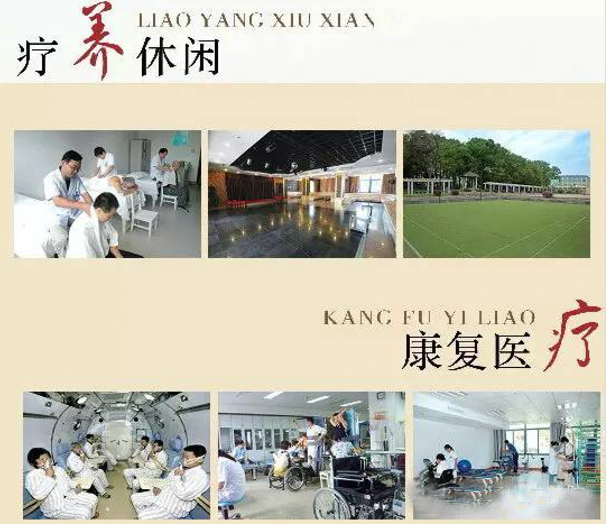
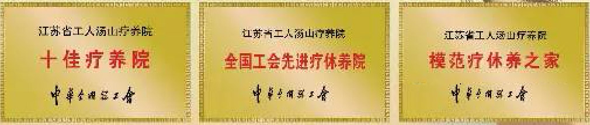

江苏省工人汤山疗养院为江苏省总工会直属大型温泉疗养院，为全国“十佳模范疗养院”之一，被中华全国总工会定为全国“劳模疗休养基地”，位于南京东郊汤山温泉风景名胜旅游区内，距市区25公里。东邻汤泉湖，西望中山陵，北依汤山镇，南接禄口机场，沪宁高速公路汤山出口和宁杭公路紧靠疗养院东西两侧。院内建有曲径亭池、紫藤长廊、花园假山，森林覆盖率85%。“晨起听鸟语、夜来泡温泉”，白天林荫道上漫步，惬意无限。
疗养院始建于1955年，占地面积9.5万平方米。“客房中心”现有客房大楼五幢，高、中、低档床位500余张，其中林荫环抱之中的“天泓楼”、 “天泉楼”为豪华双(单)标房，“天济楼”、“天源楼”和“天潼楼”为普通双（单）标房，温泉水直通客房房间，楼内有会议厅、棋牌室、OK厅一应俱全。“温泉中心”分为室内温泉和露天养生温泉两部分，室内温泉设有室内游泳馆、温泉桑拿、保健按摩、健身房、乒乓球室、棋牌室、娱乐室、器械水疗、水按摩等，露天养生温泉分为纯露天和半露天两部分，设有小鱼疗、露天泳池、戏水池、玫瑰花、酒、芦荟等20个泡池，热带风景，清爽宜人。“餐饮中心”在天济楼的附楼，一楼和二楼共设有大小包间20余间，一楼和二楼两大厅可分别同时接待260人就餐，三个中厅可分别同时接待60人就餐，主要承担疗休养团队、劳模团队、旅游团队就餐服务，还对外承办婚宴、生日宴等功能。“康复中心”现有医技人员70人，其中27人具有高级职称。汤山疗养院康复中心利用高压氧、温泉水疗、进口康复设备在心脑血管疾病、中风偏瘫外伤截瘫康复、皮肤病、烧伤、骨关节疾病的治疗等方面有独到之处。“体检中心”豪华舒适，配有500毫安X光机、彩超、大型生化仪、骨密度、乳红外、电测听、碳13呼气试验、肿瘤标志物检测等多种常规检查设备，开展各项健康体检。 汤山温泉的水温常年保持在50—60℃之间，水质洁净透明，含有钙、镁、硫、锌等三十余种矿物质和微量元素，有明显增强人体免疫能力的作用和治病强身的效能，被国家卫生部列为全国四大温泉之一。
| 2天1晚豪华健康之旅（体检套餐） | 原价：3589元（豪华套间+A档体检） | 优惠价：3149元 |
| 2天1晚豪华健康之旅（体检套餐） | 原价：1760（套间+中医理疗） | 优惠价：1456元 |